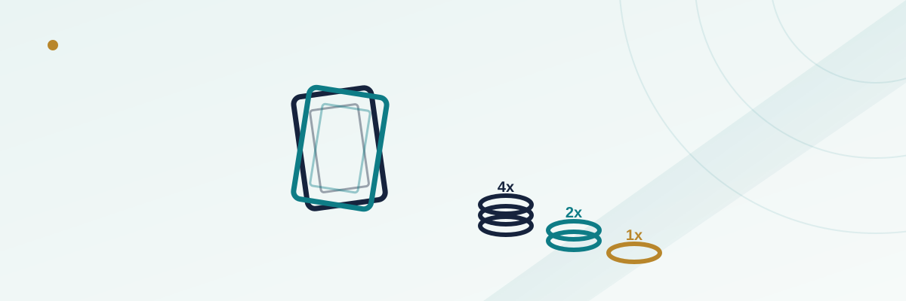

Ultimate Texas Hold'em Basics: The Blind, the Play Bet, and When to Raise

Ultimate Texas Hold'em looks like poker and borrows poker's hand rankings, but it isn't poker in the way that matters most: you're not playing against other people at the table, you're playing against the dealer's hand under a fixed set of rules, the same as blackjack or baccarat. What makes it distinct from most other house-banked table games is that you still get real decisions — three separate moments where you choose to bet more or wait — and the size of the bet you're allowed to make shrinks every time you wait. That structure is the entire game, and understanding it is most of what "strategy" means here.
In this guide
The ante, blind, and play bet structure
To sit in on a hand, you place two equal, mandatory bets: an Ante and a Blind. Most tables also offer an optional Trips side bet, wagered separately on whether your final five-card hand hits three of a kind or better, regardless of whether you beat the dealer. Once those bets are down, you and the dealer each get two cards face down, and a five-card community board (a flop, turn, and river, exactly like poker) gets dealt in stages as the hand progresses. Your job across those stages is to decide, at three specific moments, whether to add a Play bet or wait for the next community cards — and that Play bet is the only part of your wager where the size is actually your choice.
The three decision points: 4x, 2x, and 1x
The whole game hinges on three checkpoints, and the rule that ties them together is simple: the longer you wait to bet, the smaller your maximum allowed bet gets.
| Decision point | What you've seen | Play bet size if you bet here |
|---|---|---|
| Pre-flop (after your two hole cards) | Only your own two cards | 4x the ante |
| After the flop (three community cards) | Your two cards plus 3 of 5 community cards | 2x the ante, only if you checked pre-flop |
| After the turn and river (all five community cards) | The complete seven-card picture | Exactly 1x the ante, or fold, if you checked twice |
Betting 4x pre-flop is a real commitment made with the least information you'll ever have in the hand — but it's rewarded with the largest possible Play bet. Wait through the flop and you can only bet 2x, and only if you didn't already bet. Wait all the way to the river, with every card now visible, and your only options are a flat 1x bet or folding outright, which forfeits both your ante and blind. That inverse relationship — more information available, less bet allowed — is the core tension of every hand.
How the dealer's hand qualifies the round
For the dealer's hand to "open" and be compared against yours, it needs to hold at least a pair using the same five community cards plus their own two hole cards. If the dealer doesn't have at least a pair, the Ante bet pushes regardless of how your hand compares to theirs — a meaningfully more forgiving qualifying standard for the house than a game like Three Card Poker, where the dealer's hand not qualifying can still resolve differently depending on the specific game's rules. If the dealer does qualify, your Ante and Play bets are settled by simple hand comparison: better hand wins even money, worse hand loses, a tie pushes.
The blind bet's separate payout table
The Blind bet is the part of the game newer players most often misunderstand. It isn't settled by comparing your hand to the dealer's at all — it's paid purely on the strength of your own final five-card hand, based on a fixed table that only pays out from a straight upward. A pair, two pair, or three of a kind wins you the overall hand if you beat the dealer, but none of those pay anything extra on the Blind bet specifically; the Blind bet stays flat (a push, not a loss) unless your hand clears the straight threshold.
| Final hand | Typical blind payout |
|---|---|
| Royal flush | 500 to 1 |
| Straight flush | 50 to 1 |
| Four of a kind | 10 to 1 |
| Full house | 3 to 1 |
| Flush | 3 to 2 |
| Straight | 1 to 1 |
| Pair, two pair, three of a kind, or worse | Push (bet returned) |
These figures are the standard, widely used paytable, but exact numbers can vary slightly by casino, so it's worth glancing at the posted table before you sit down — the same way you'd check a blackjack table's blackjack payout before playing.
A simplified version of basic strategy
Full Ultimate Texas Hold'em strategy charts list dozens of specific starting-hand combinations, but the underlying logic is learnable without memorizing all of them. As a simplified, beginner-friendly starting point: consider betting the full 4x pre-flop with any pocket pair, any hand containing an Ace, and most two-card combinations where both cards are ten or higher. Outside of hands like those, checking pre-flop to see the flop for free — and deciding again with more information — is usually the better default. After the flop, a common rule of thumb is to bet 2x if you already have a pair or better using the flop cards, or a strong four-card draw toward a straight or flush. On the river, with all seven cards known, the standard approach is to bet the mandatory 1x whenever you have at least a pair, since it takes a specific, less-common dealer hand to beat even a modest made hand at that final stage, and the cost of folding is giving up on a bet you'd already committed to with the ante and blind.
This summary trades some precision for memorability. Casinos and strategy sites publish full hand-by-hand charts, and using one at the table (most casinos allow it) will outperform any simplified version — but the framework above captures the actual shape of correct play: bet big early with strong-looking hands, bet modestly after the flop with real improvement or a live draw, and rarely fold once you've reached the river with any kind of made hand.
The optional Trips side bet
Trips is a side wager, settled independently of everything else at the table, that pays based solely on whether your final five-card hand reaches three of a kind or better — win, lose, or fold the main hand, Trips is graded on its own. Because it's evaluated on your best five-card hand out of your two hole cards and the five community cards, it behaves a lot like a poker-hand-strength side bet in other table poker games: it carries a noticeably higher house edge than the main ante/blind/play combination, and it's a bet made purely for the chance at a bigger, faster payout rather than for its long-run value.
Common mistakes
- Folding too often on the river. Once you've checked twice, the 1x bet is small relative to what's already at risk in the ante and blind — many hands that feel weak are still worth the extra 1x rather than surrendering everything already wagered.
- Betting 3x instead of 4x pre-flop out of caution. Standard strategy treats the pre-flop decision as binary — bet the full 4x or check — because a smaller 3x bet pre-flop generally isn't part of an optimal strategy the way it might seem intuitively safer.
- Confusing the blind payout with the main hand result. Winning the overall hand against the dealer and triggering an extra blind bonus are two separate things — a small pair beats a dealer's non-qualifying hand for the win, but pays nothing extra on the blind specifically.
- Treating Trips as part of core strategy. It's a higher-variance, higher-house-edge side bet layered on top of the main game, not something basic strategy for the ante/blind/play decisions accounts for.
Frequently asked questions
Is Ultimate Texas Hold'em the same as playing poker against other players?
No. You're playing against the dealer's hand under fixed rules, the same as blackjack or baccarat — there's no bluffing other players, reading opponents, or betting against anyone but the house.
Can I bet less than 4x if I want to bet something pre-flop?
Typically no — the pre-flop Play bet is 4x the ante if you bet at all (some tables also allow 3x on certain hands per house rules), and standard basic strategy treats it as a bet-4x-or-check decision.
What happens if I check all the way through and don't like my final hand?
You can fold at the river stage instead of making the mandatory 1x bet, but folding forfeits both your ante and blind bets — the 1x decision is really "how much more am I willing to risk," not "should I stay in at all."
Does the blind bet ever lose on its own?
Yes — if the dealer's hand beats yours (and qualifies), you lose the ante, play, and blind bets together. The blind's separate paytable only applies when you win or push; it doesn't protect the blind bet from losing when the dealer's hand is simply better.
Is the Trips side bet worth playing regularly?
It's a matter of preference rather than value — like most three-of-a-kind-or-better side bets, it carries a higher house edge than the core game, so it's best thought of as an occasional, higher-variance add-on rather than part of a value-focused strategy.